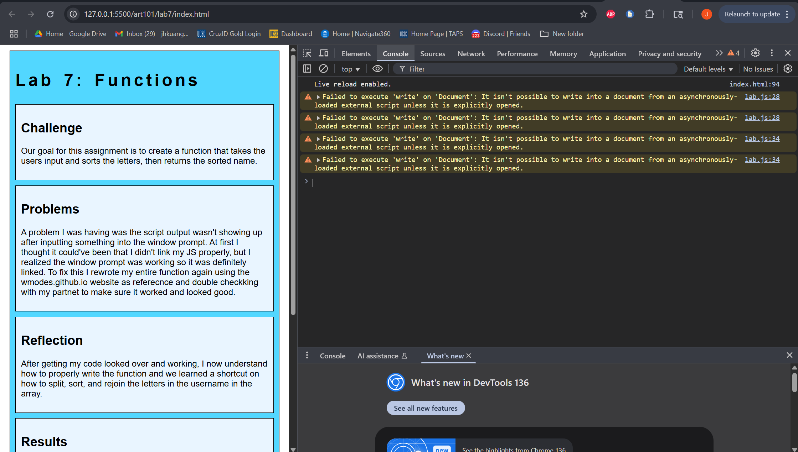
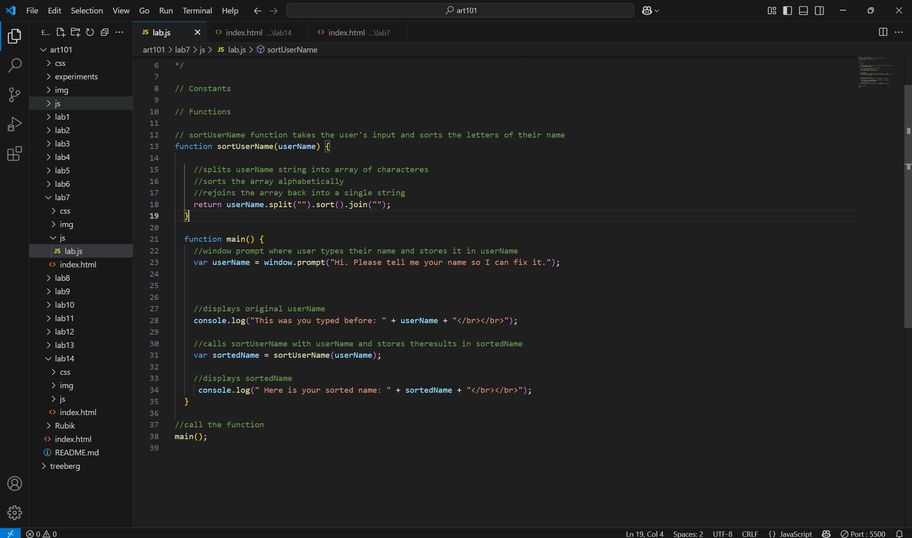
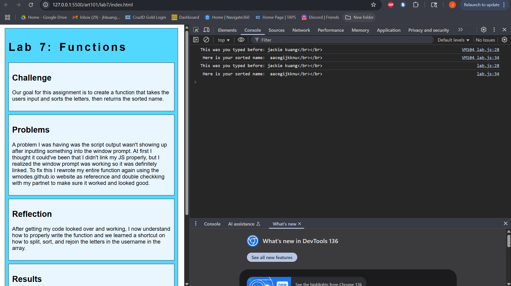

Lab 14: Debugging
Challenge
Our challenge for this assignment was to go back into prior labs and debug any errors we might have had.
Problems
I had to deal with my Lab 7: Functions and I had 4 errors about failing to execute 'write' on Document.
Results
My results are shown below.
Debugging

I don't know what was happening with this error, but it didn't effect my website at all since it still worked. But on the console this error would pop up and according to WesBot it is because my JS file is loading asynchronously.

To resolve this error I changed document.writeln to console.log and it got rid of the errors.
